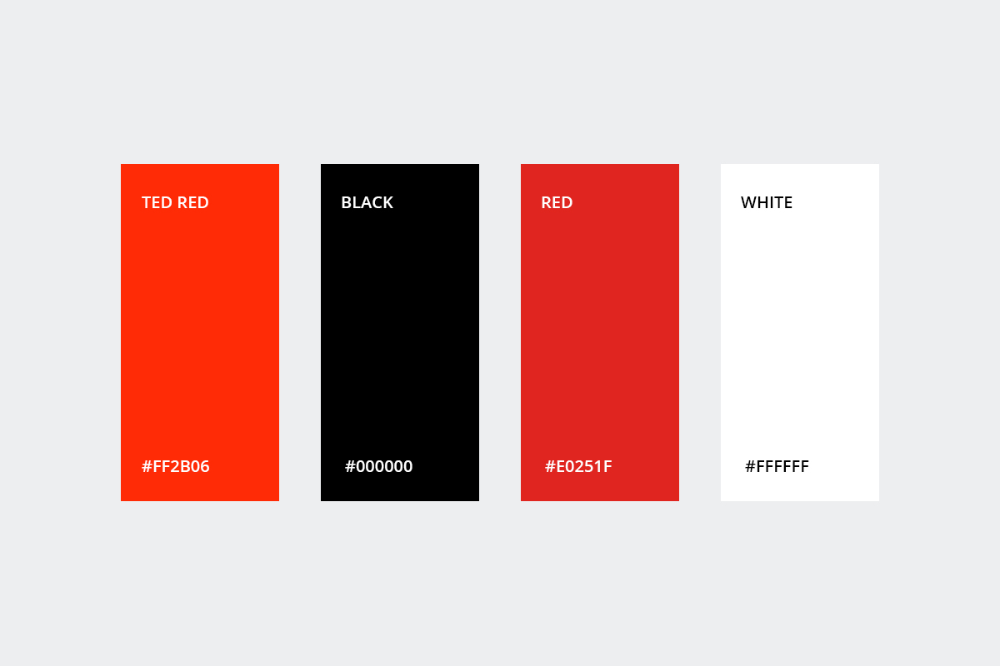
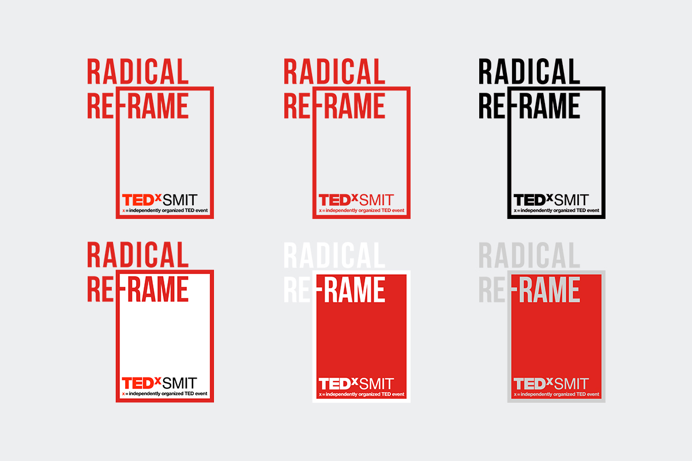
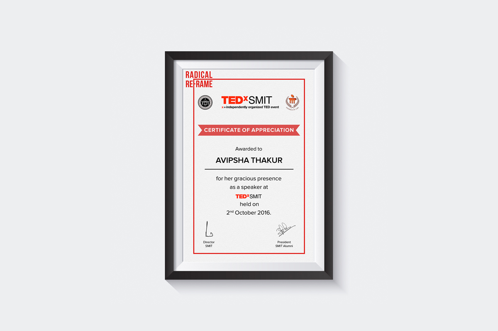
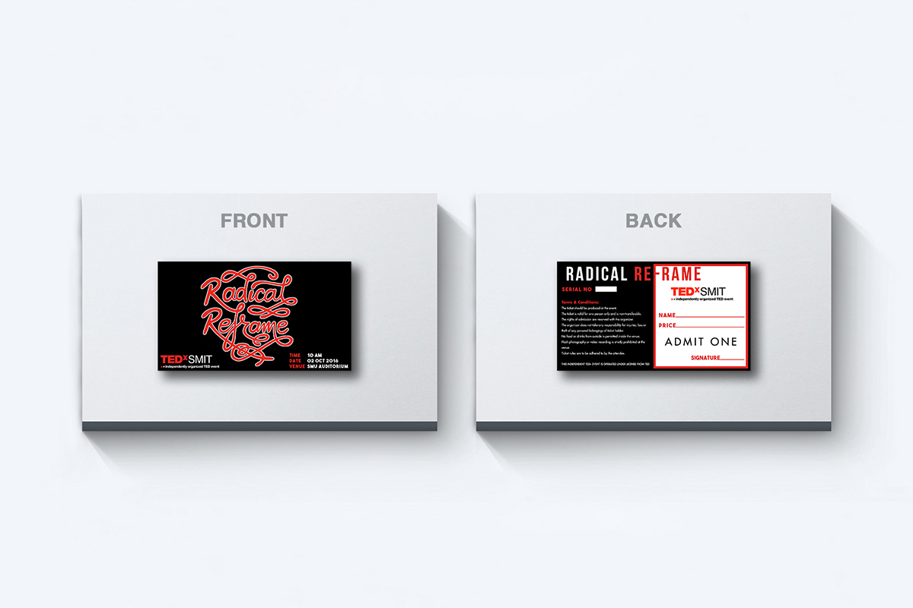
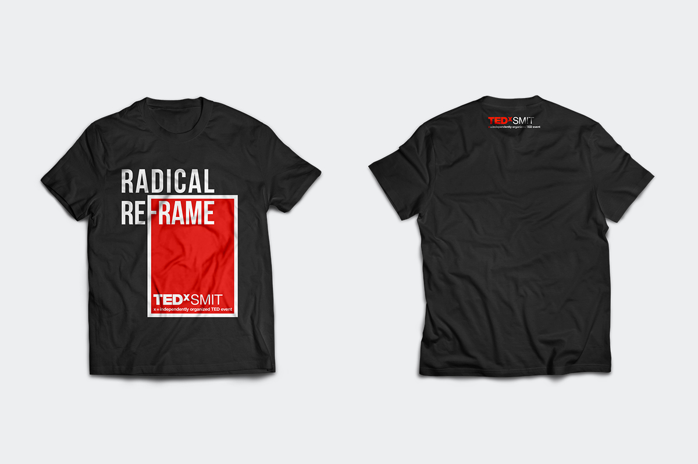
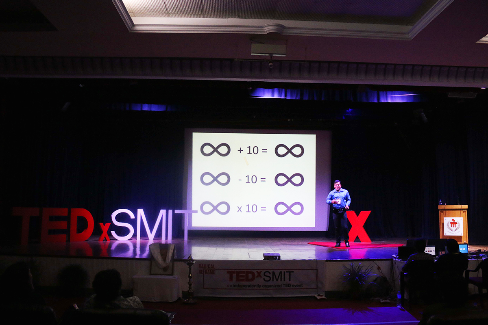
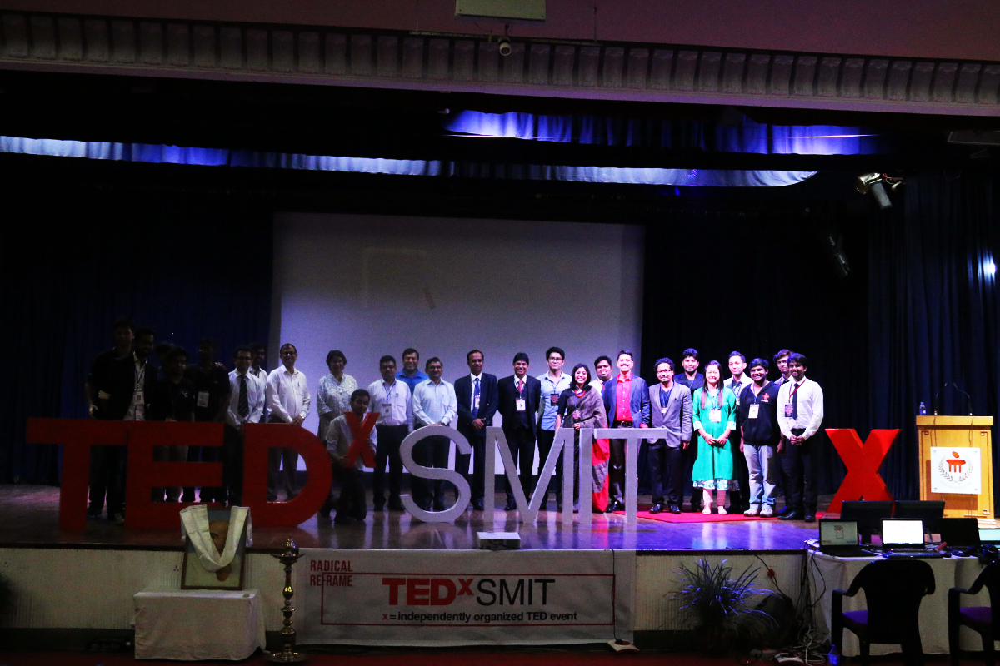

TEDxSMIT : Radical Reframe
Branding, Graphic Design
About TEDxSMIT
In the spirit of ideas worth spreading, TED has created a program called TEDx. TEDx is a program of local, self-organized events that bring people together to share a TED-like experience. Our event is called TEDxSMIT, where x = independently organized TED event.
At our TEDxSMIT event, TEDTalks video and live speakers will combine to spark deep discussion and connection in a small group. The TED Conference provides general guidance for the TEDx program, but individual TEDx events, including ours, are self-organized.
Scope of Project
The theme for the 2nd edition of TEDxSMIT was Radical Reframe. I was leading the design team responsible for the branding of the event. We opted for a simple frame design as the overall visual identity for TEDxSMIT.
The design provided a visual portrayal of our theme like the speakers in our event who pushed our community to radically re-frame our thought process and provide a new perspective.







